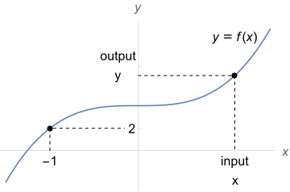
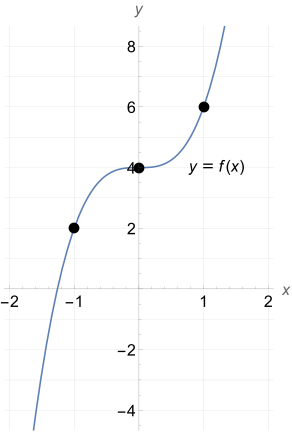
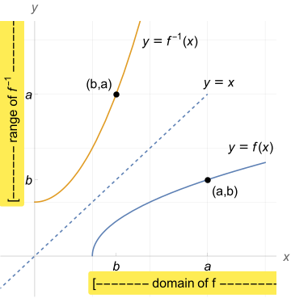
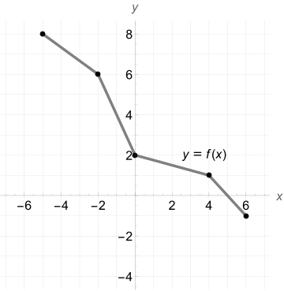

In the inverse problem, we are told the output \(y = f(x)\) of the function and find the corresponding input \(x\text{.}\) We could have solved this problem regardless of the given \(y\)-value. Regardless of wherever I choose the output \(y\) on the graph, I can always trace back to find a unique corresponding input \(x\text{.}\)

Figure6.31.Graph of \(y=2x^3+4\text{.}\)
Example6.32.
Let \(f(x) = 2 x^3 +4\text{.}\) Find \(x\text{,}\) if \(f(x) = y\text{.}\)
We must solve the equation \(f(x) = y\) for \(x\text{.}\)
Not all functions have inverse functions, an issue we address in Section 6.9. An inverse function, if it exists, is in fact unique. As such, it deserves its own special notation introduce below.
Theorem6.36.
Suppose \(f\) has an inverse function \(g\text{.}\) Then \(g\) is the unique such function and will be denoted by \(f^{-1}\) from now on. It satisfies,
\((f^{-1}\circ f)(x) = x\text{,}\) for all \(x\) in the domain of \(f\text{;}\) and
\((f\circ f^{-1})(y) = y\text{,}\) for all \(y\) in the domain of \(f^{-1}\text{.}\)
There is a nice relation between the graph of a function and its inverse function (when there is one).
Example6.37.
Let \(f(x) = 2 x^3 +4\text{.}\) Then we saw in Example 6.34 that \(g(y) = \sqrt[3]{\frac{y-4}{2}}\) is an inverse function of \(f\text{.}\) As such, it is the only inverse function of \(f\) and we may now write
I personally like to write \(f^{-1}(y)\) emphasizing that the inverse function accepts a \(y\)-value from the graph of \(f\) as its input. However, it is customary to use \(x\) as the input to a function so we usually rewrite this as
We can now plot \(y=f^{-1}(x)\) and compare it to the graph of \(y=f(x)\text{.}\)
Figure6.38.Graph of \(y=f(x)\)
Figure6.39.Graph of \(y=f^{-1}(x)\)
Observe the labeled points. For instance, \(f(1)=6\) so that \((1,6)\) is a point on the graph of \(f\text{.}\) Then, \(f^{-1}(6) = 1\) so that \((6,1)\) is a point on the graph of its inverse function. Repeat this observation for the other marked points on the two graphs.
Principle6.40.Graphs of Inverse Function.
Suppose \(f\) has an inverse function. Then,
\((a,b)\) is a point on the graph of \(f\) if and only \((b,a)\) is a point on the graph of \(f^{-1}\text{.}\)
The graph of \(y=f^{-1}(x)\) is obtained by reflecting the graph of \(y=f(x)\) over the line \(y=x\text{.}\)
The domain of \(f\) is the range of \(f^{-1}\text{.}\)
The range of \(f\) is the domain of \(f^{-1}\text{.}\)

Example6.41.Evaluating the Inverse Function Graphically.
Below is the graph of a function \(f\) which has an inverse function.

Find \(f(6)\text{.}\)
Find \(f^{-1}(6)\text{.}\)
Find the real number zeros of \(f^{-1}\)
Find the domain and range of \(f^{-1}\)
Sketch the graph of \(y=f^{-1}(x)\)
Solution.
\(f(6) = -1\) because \((6,-1)\) is on the graph of \(f\text{.}\)
\(f^{-1}(6) = -2\) because \((-2,6)\) is on the graph of \(f\text{.}\)
\(f(0)=2\) so that \(f^{-1}(2) = 0\) and \(x=2\) is the only zero of \(f^{-1}\)
The domain of \(f\) is \([-5,6]\) which is also the range of \(f^{-1}\text{.}\) The range of \(f\) is \([-1,8]\) which is also the domain of \(f^{-1}\text{.}\)
Take the key points on the graph and interchange the coordinates. Plot these and connect the dots.
Warning6.42.Many Kinds of Inverse.
Be careful with the interpretation of the exponent \(-1\text{.}\) For instance, \(2^{-1} = 1/2\) refers to the multiplicative inverse of the real number \(2\) satisfying